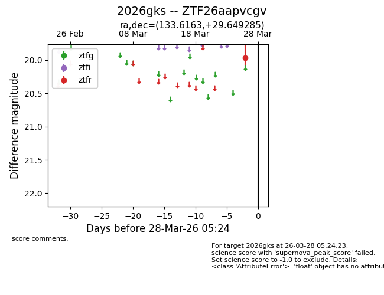
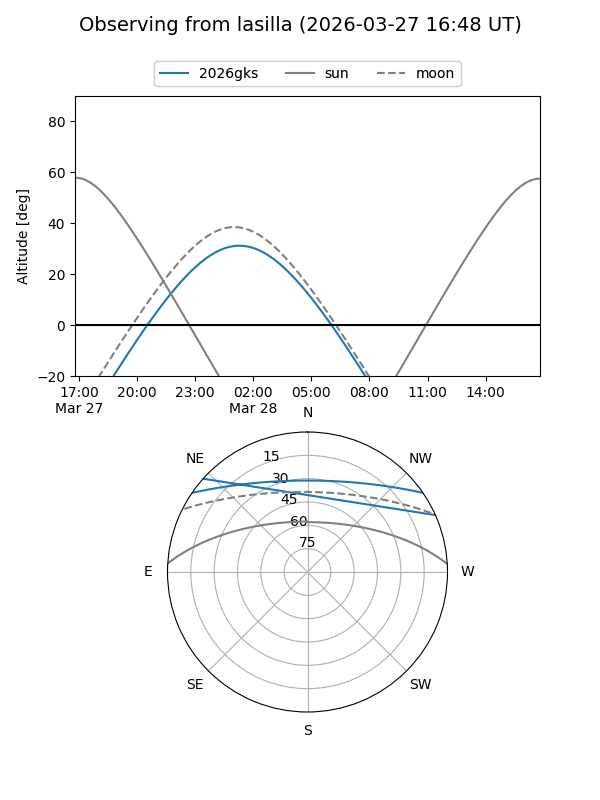
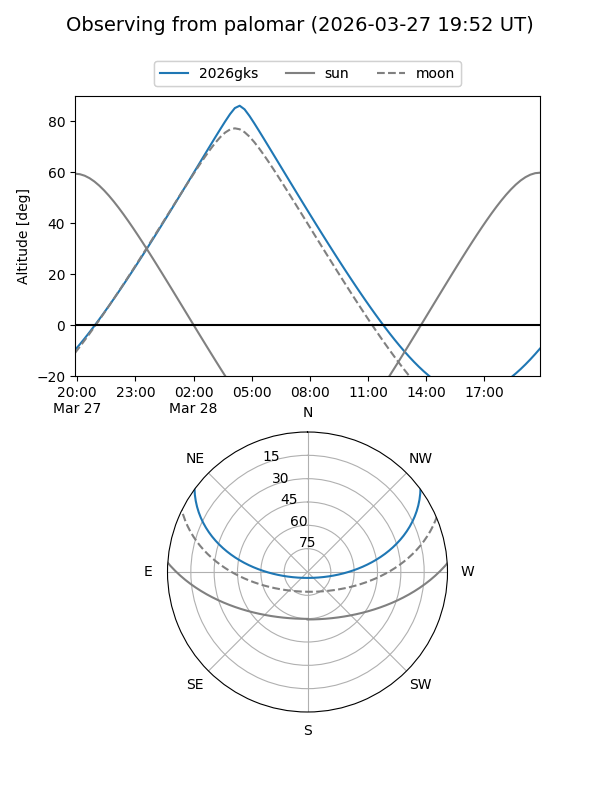
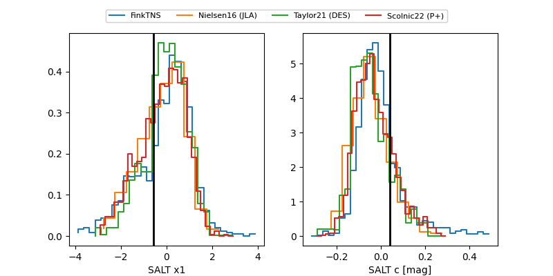

2026gks
Target 2026gks at 2026-03-28 05:27
Aliases and brokers:
FINK: link
Lasair: link
ALeRCE: link
TNS: link
YSE: link
alt names
ZTF26aapvcgv (ztf,fink_ztf)
2026gks (tns,yse)
Coordinates:
equatorial (ra, dec) = 133.6163,+29.64928
equatorial (HMS+DMS) = 08:54:27.90,+29:38:57.42
galactic (l, b) = (195.2830,+38.39759)
Flags:
Photometry:
last ztfr=19.96
1 ztfr detections
Lightcurve

Visibility


Additional plots
